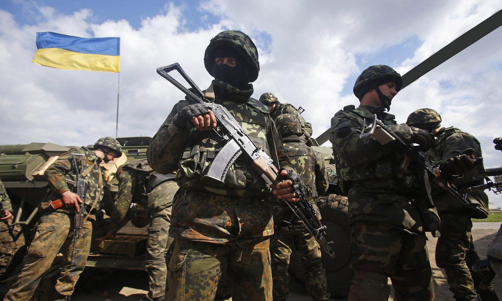
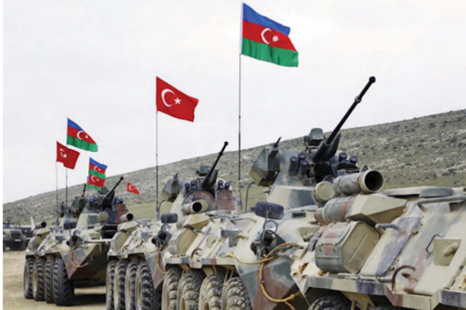
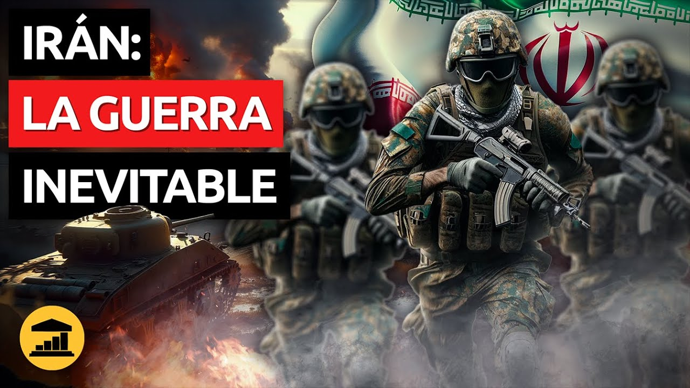
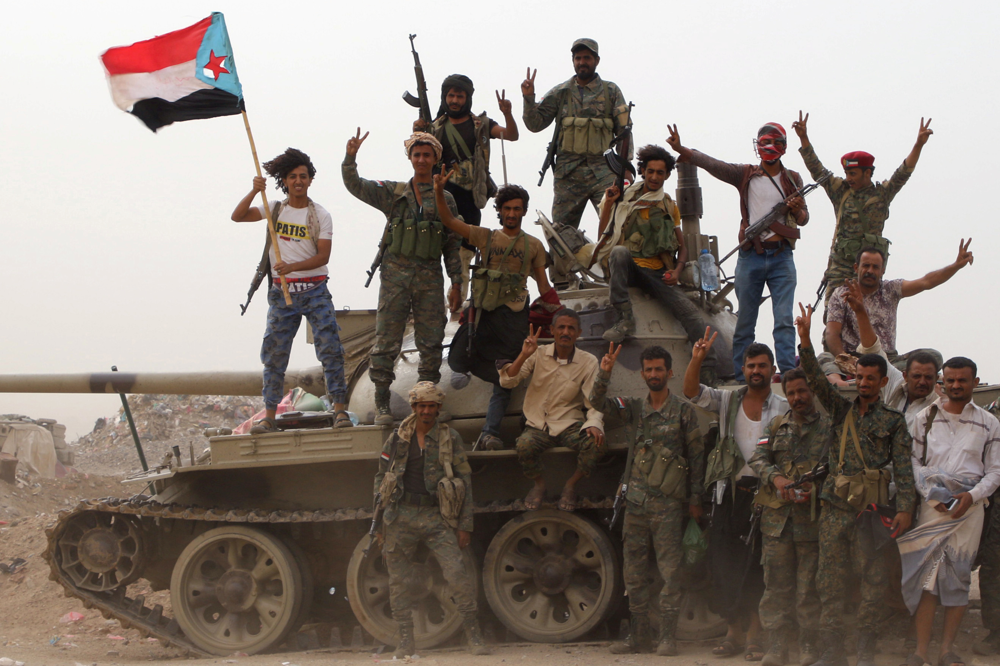

as crisis políticas, dificultades económicas y el cambio climático provocarán un colapso social no sólo en algunos países sino a nivel mundial? Las respuestas más pesimistas a las grandes preguntas de este año parecen descabelladas. Pero después de los últimos años, sería demasiado complaciente descartar lo impensable.
Hasta ahora, Ucrania ha resistido el asalto de Rusia, gracias al valor de los ucranianos y la ayuda de Occidente. Pero después de casi un año de combates, no se vislumbra el final. Cuando el Kremlin lanzó su invasión total en febrero, parecía esperar derrocar al gobierno de Ucrania e instalar un régimen más dócil. Calculó mal. La resistencia de Ucrania fue tan feroz como la planificación de Rusia fue inepta. En primavera, Moscú se vio obligado a retirarse de los alrededores de Kiev y concentró sus fuerzas en el oriente y el sur. Luego, a finales del verano, las tropas ucranianas, ahora armadas con armas más potentes suministradas por Occidente, avanzaron también allí.
Si la guerra en Ucrania ha tenido repercusiones en crisis de todo el mundo, su impacto ha sido especialmente agudo en el sur del Cáucaso. Dos años después de su última guerra por Nagorno-Karabaj, Armenia y Azerbaiyán parecen encaminadas a un nuevo enfrentamiento. Las acciones de Rusia en Ucrania han alterado los cálculos en la región. Una nueva guerra sería más corta pero no menos dramática que el conflicto de seis semanas de 2020. En esa guerra, en la que murieron más de siete mil soldados, las fuerzas azerbaiyanas expulsaron a los armenios de partes del enclave de Nagorno-Karabaj y áreas cercanas, todas las cuales se encontraban bajo control de las fuerzas armenias desde principios de la década de 1990. Finalmente, Moscú negoció un alto al fuego.
Las masivas protestas contra el régimen, la despiadada represión iraní y su suministro de armas a Rusia han dejado a la República Islámica más aislada que nunca en las últimas décadas, justo mientras se gesta una crisis por su programa nuclear. Las protestas que sacuden el país han planteado la amenaza más prolongada y contundente para la autoridad de la República Islámica desde el Movimiento Verde de 2009. Decenas de miles de personas, en su mayoría jóvenes, encabezadas por mujeres y estudiantes que rechazan el uso obligatorio del hiyab como símbolo de misoginia y opresión en general, han tomado las calles en actos de desafío contra el régimen.
Yemen está en el limbo. Una tregua de abril entre los rebeldes hutíes y el gobierno internacionalmente reconocido del país, respaldado principalmente por Arabia Saudita y los Emiratos Árabes Unidos (EAU), expiró en octubre. No se han reanudado combates significativos, pero ambos bandos se preparan para volver a la guerra. La tregua negociada por la ONU fue una inesperada luz en un brutal conflicto de ocho años. En noviembre de 2021, los hutíes, que controlan gran parte del nororiente de Yemen, parecían estar cerca de la victoria. Si hubieran logrado tomarse la ciudad de Marib y las instalaciones cercanas de petróleo y gas, habrían ganado la guerra por el norte, habrían conseguido los fondos que tanto necesitaba su cuasi Estado y marcado el fin del gobierno del entonces presidente Abed Rabbo Mansour Hadi. Su ofensiva se evitó cuando fuerzas afiliadas a EAU expulsaron a los hutíes de territorio estratégico en Marib y la vecina Shabwah en enero de 2022. Los hutíes respondieron con ataques transfronterizos con misiles y drones contra EAU y Arabia Saudita. Entonces, la guerra de Ucrania provocó una escasez mundial de alimentos y combustible que significó nuevas presiones sobre todas las partes.
